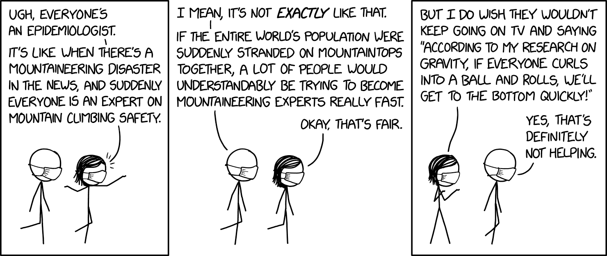
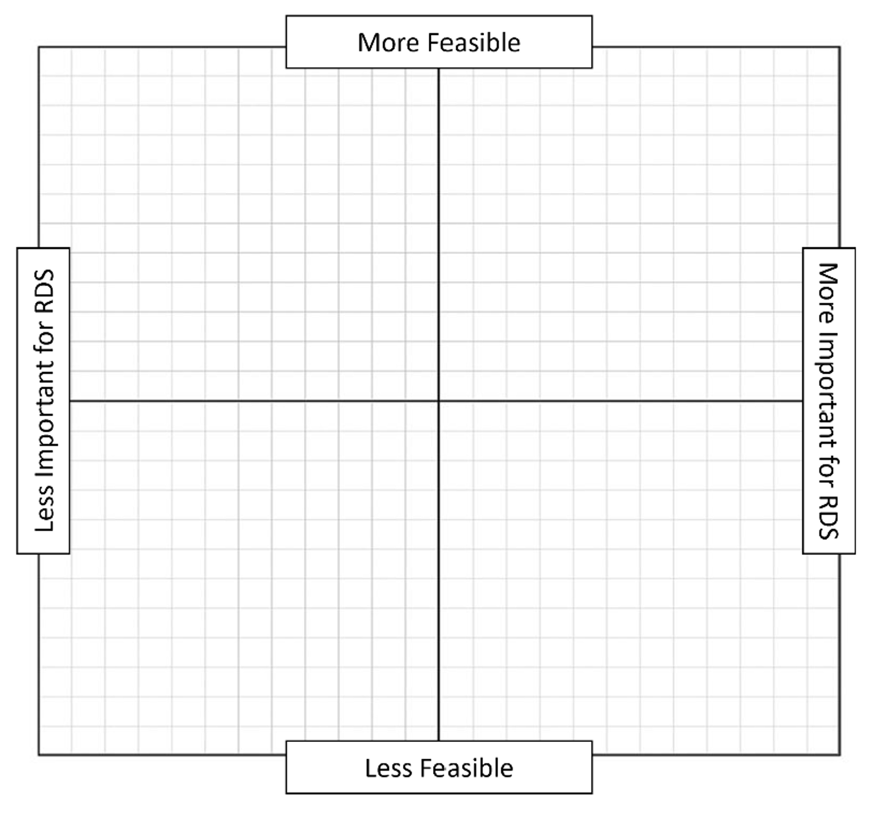

6 The FACT of Data Science
“Responsible data scientists take steps to make data they depend on FAIR (findable, accessible, interoperable, reusable) while ensuring the FACT (fairness, accuray, confidentiality, transparency) of the algorithms and tools they create… their work must be placed in the context of broader social, legal, ethical aspects.” -Digital Society
A prominent advocacy movement for responsible data science practices is FACT. This philosophy for data science describes four core areas where we can take responsibility in our data science practices: Fairness, Accuracy, Confidentiality and Transparency. They are not the only factors that contribute to responsible, equitable and just data science, specifically on their own they do not define what relevant contexts are important in avoiding continued structural inequity. However, it does provide an accessible framework with which this workshop will extend to include consideration of historical, socio-technical and structural inequities. Below we will discuss each in turn along with specific actions that will help you develop more responsible and equitable data science practices.
6.1 Case Study: Carbin App for Pothole Identification
Summary: In an attempt to reduce the carbon emissions in highly populated areas, a multi-campus contingent consisting of 6 undergraduate and graduate data scientists and 5 faculty members (MIT, UMass Dartmouth, Harvard and Birzeit University in West Bank Palestine) developed algorithms that use accelerometers, navigation software, and other proprioceptive technologies built into most smart phones to identify road conditions. Bad road conditions substantially increase carbon emissions from vehicles. Data: Originally they had planned to develop the app for iPhones specifically, however, one of the students observed iPhones are much more expensive than Android phones and are used disproportionately by those who live in wealthier areas of both Cambridge, USA and West Bank, Palestine. In fact, iPhones are widely inaccessible to Palestinians, so the team developed the app for both types of phones to accommodate for the SES and location-based biases that would result from using only iPhone data. In addition, they recognized the SES imbalances of who has access to cars and utilized volunteers as well as some public transportation services (buses) to gain data in areas that may not be accessed due to lack of local drivers, or drivers without smartphones.
Methods: The team recognized that algorithms are likely to pick up on differences in driving style for individuals, weather conditions, and cultural norms. They use highly sophisticated math derived from extensive beta-testing in order to adequately isolate movement caused by road conditions apart from driver-created turbulence.
Communication: The team behind Carbin has clearly put thought and work behind their presentation of the software. They use cross-cultural collaboration, consulted with technology experts in other universities. They have developed an informative and accessible website that outlines the goals and expectations for the project. They also communicate the potential disparate impact surrounding using crowdsourcing alone to collect road condition data, and aim to combine crowdsourcing with strategic deployment of drivers to collect data in disadvantaged areas.
6.2 Fairness
The data science pipeline (from data collection and management to the development of computational methods for analysis, communication, etc.) should be free from bias. In this case, bias refers not only to prejudices such as racism, sexism, ableism, etc., but also to uncovering the imbalances and unrepresented components in our data. Fairness means that you should only interpret the data with its specific context in mind. Every dataset reflects the biases of the society in which it was produced. If your project touches on sensitive issues or vulnerable populations, it must from the beginning also include collaborators with in-depth cultural and ethical understanding of the issues and context of the data. For projects that do not explicitly interface with such issues and peoples, it likely does so implicitly. No researcher should assume that their work is without fault to marginalized communities and should always consider the sociocultural contexts in which their work is carried out.
6.2.1 “Correcting for Bias”
Fairness algorithms in machine learning attempt to account for data biases in one of three ways. The first is referred to as post-hoc fairness, that is, taking a trained model and rearrange its output to be more equitable. What “more equitable” means is up for debate with over twenty definitions[cite] of fairness used in the literature, but typically implies trying to balance the number of people of different protected status variables (PSVs, eg race, sex, gender, marital status, etc.) in the various decisions the learner could make. For example, if a black box model is in charge of determining riskiness for a loan, a data scientist may take the output of the model for a population and rearrange the output so that people of different races are treated equally (e.g., getting the loan and being denied).
Rather than making post-hoc decisions, models can also learn to be more fair by propagating a fairness signal. In the same way that a learner processes data and is trained based on how close it got to perfect accuracy, one can train a network so that it predicts people of different PSV’s similarly. Finally, models can also learn to be fair through an adversarial training process. Adversarial learning is the process of training a model alongside an adversary with opposite goals. For fairness, the adversary will look at the output of the learner and try to determine the PSVs of the datum. The model must not only learn how to make predictions about data correctly, but do so in a way that the adversary cannot determine the PSVs of the data.
These styles of fairness can be useful in overcoming very direct and overt biases towards particular marginalized groups, and may be a decent starting point for addressing the larger issues of equity in data science, however this still leaves a lot to be desired. These algorithms tend to only look at one very specific type of discrimination and almost never consider the intersection of different attributes. We can make an algorithm fair with respect to individual protected status, but this gives no guarantees that the model will be fair to combinations of such groups. In practice, fairness algorithms are frequently only applied to binary PSVs, or PSVs are binarized to work with existing algorithms. Data scientists will group people into a binary and assume one group will be privileged, and the other oppressed. This is concerning in its own right as it is a textbook example of erasure, but it also obfuscates potential forms of bias that may exist in a model. Further, fairness algorithms are only able to look at a small piece of the whole. Most fairness datasets used in research only look at a single protected status - some algorithms can only optimize on a single PSV - and at the most only 3 PSV’s will be examined at a time. Fairness algorithms assume that PSVs are immutable characteristics of a datum. For example, certain groups of people have been considered a “race” at different points in United States history, and one group of people may be racialized in one society, but not another. Fairness algorithms cannot take this into account. Finally, fairness algorithms and laws governing them provide an easy “out” to the problem of doing data science for equity. If we use a fairness intervention and demonstrate statistical parity, equalized odds, etc, this provides the false impression that we fixed the problem, when in reality there is always the possibility that an algorithm can be unfair in a specific context.
While these approaches are better than nothing, they are based on false assumptions about discrimination and are often incapable of evaluating more complex forms of discrimination. Fairness is an aspect we need to be constantly vigilant about, not a check box to tick before shipping out a product.
6.2.2 Case Study: Crowdsourcing City Governance
Summary: Departments of housing and transportation in cities across the U.S. have begun using data-driven technologies to make governance decisions (e.g. building development, road improvements, policing patrols, resource allocation etc.) A vast majority of the data used to inform their decisions are collected through “311” complaint hotlines/online reporting. Crowdsourced data can give real-time snapshots of the conditions in different parts of the city, which can be important for future planning as well as emergency response.
Fairness Concerns: Reporting behaviors have disparate cultural and historical impacts are different communities in urban areas. Not only are privileged {people who live in a place} more used to asking for what they need, they are also more used to having those needs met with reverence. Conversely, the historical oppression of BIPOC communities by government entities has led to a culture of self-governance and distrust of authority. These known cultural differences have led to major imbalances in crowdsourced 311 data. Wealthy white neighborhoods are more likely to have a higher frequency of calls regarding a wider range of reported content. Whereas, neighborhoods with objectively a higher rate of infrastructural decay are less likely to be reported through official channels and are not represented in the crowdsourced data. The data-driven decision-making is unlikely to correctly account for the bias in the crowdsourced data further contributing to the inequities in resource allocation and distrust for city governance by underserved populations.
6.3 Accuracy
When discussing equity and justice, it is often said impact is more important than intention. However, it is also understood that it is impossible to completely control the impact our actions have on any single individual. This is true for research. Most areas of research responsibility involve factors that are difficult to control as researchers. However, we have the most control of the accuracy or quality of the research we produce. To ensure accuracy of data science research, the methods we employ should be backed by theoretical understanding of the inferences and interpretations that are possible through such methods. In addition, we should be utilizing practices that follow statistical and methodological rigor with respect to the context of the data we are using. The abundance of available data allows for greater exploration into datasets by anyone with access and at least a minimal understanding of statistical software. Many of the spurious correlations that are reported and gain traction in popular “science” blogs/news are the results of irresponsible data science methods used by researchers (academic or industry) without theoretical understanding(or purposeful ignorance) of the statistics underlying the method or the context in which the data was collected.
Misinterpretation of model output is also a concern in data science methods. Often our models are very complex, so the interpretation of the results and description of what the model is doing can be difficult to clearly present in non-technical language. However, it is the job of the data scientist to be sure that their audience is deriving an accurate interpretation of the results. The other major concern regarding accuracy of interpretations from results and how they are communicated is what we call “visualization crimes”. Even if data is unbiased and correctly analyzed, the results can be visually presented in misleading ways. We won’t go too deep on this topic as there is a wonderful primer on Data Visualization. However, bad data visualization can lead to base-rate fallacies and a conflation of relative vs. absolute risk/probability, so an increased accountability regarding the use of visualizations is needed to promote responsibility through accuracy in data science.
6.3.1 Case Study: Gender and Mentorship
Summary: Authors used publication and citation network data which contains author names, affiliations and publication venues for individual papers as nodes with directed connections between nodes indicating papers cited by each paper. They used this data to derive impact measures, gender using a publicly available gender classifier on the names of authors and academic age (#years from first publication) for each author represented in the dataset. From those derived metrics, the authors created mentor-mentee dyads determined by same institutional affiliation and the difference in academic age at time of publication(see paper for more details). In addition to network data, the authors surveyed the identified “junior” researchers regarding their experiences with their mentors. They then sorted mentees based on how much of a “big-shot” the mentor is (their derived impact) to compare the surveyed mentees’ perceived quality of mentorship. The article uses the combination of survey collected measured and network data to report that “big-shot” mentees result in higher ratings of satisfaction with mentee relationship as well as better mentee impact. They also conclude female mentors are less beneficial to female mentees than male mentors with regard to impact, and that female mentors lessen their gain by mentoring female students compared to male students. They do not report any survey findings on the basis of mentor or mentee gender.
Accuracy Concerns: This article was very quickly retracted after its publication due to the mentorship & gender interpretations of the results. However, there are many methodological problems that likely affect the accuracy of their claims. I address a select few in detail below. Gender classification. First and foremost, the gender determination method likely introduced inaccuracy and bias. The classifier used gives a probability value for male or female given a full name and country of origin. It is unclear how the authors determined the country of origin for each author. Given the high immigration rates of academics institutional affiliation would be a poor indicator of author origin. It is assumed that the classifier returns the gender that is most probably given the name, however it was not specified by the researchers. The authors reported an “error-rate” of 7% for gender classification, however it did not specify how it determined that error-rate. In fact, recent studies have shown that the specific gender classifier used in this research is incredibly inaccurate for non-anglo names and did not take any non-binary gender identities into account through classification(Wilson et al, 2022). In addition, not only were non-binary identities left out of the classification process there was not even a mention of the potential presence of non-binary genders in academia.
Mentor-mentee pairs. The determination of mentor-mentee relationships allow for extreme amounts of bias and noise. The determination was made based on the academic age at time of publication between authors. On all publications any author with an academic age below 7 was considered a mentee and any author with an academic age over 20 was considered a mentor if they share an affiliation in at least one charred publication. In the age of large scale collaborations, this definition of mentor mentee relationships is likely very inaccurate.
Survey data. The response rate to the 2000 junior scientists surveyed was 8%, which is fairly standard for survey research, however the sensitive nature of the question is likely to influence not only how participants respond to survey questions, but also who responds to the survey. The data is likely to be highly unrepresentative of junior researchers overall. In addition, due to the way that mentor-mentee pairs are derived, mentees are likely to have multiple mentors. Based on what was reported the survey did not have respondents specify who their mentor was, so matching survey responses to network derived mentor-mentee pairs and impact is not appropriate. There is no guarantee that the surveyed research is describing the same relationship represented in the network. The results for mentor quality by derived metrics are meaningless.
Mentor-mentee gender results. In addition to the bias introduced by the gender classifier, the gender comparisons made by the authors in determination of mentee and mentor success is highly biased. The results were interpreted as ineffectual mentoring by female mentors for female mentees compared to male mentors. However, researchers did not account for a variety of known factors that could account for the finding. For instance the general gender bias in publication (very well documented) can easily explain both the low impact on female mentees and mentors. Of course, female researchers who publish with male researchers (whether they are male mentors or male mentees) will have higher publication/citation rates. In addition, data does not account for retention/graduation rates of female mentees which has been well documented to be lower for male mentors than female mentors. I will point out that the researchers’ results are exploratory (aka not part of their original research question). However, they make a point of interpreting the data not as evidence of gender bias in citations (documented in many other places), instead their interpretation implies that female students are better off with male mentors which is counter to the actual research on the subject.
6.4 Confidentiality
In order to engage in data science we need data, and in our digital age there is an abundance of data available. However, not all data is created equally. We’ve already talked about how bias or inaccuracy can result in shoddy data science, the proverbial garbage in → garbage out, but even if data is high quality, there still remains the question of whether responsible data science can be done with data obtained through unethical and inequitable means.
6.4.1 Privacy and Data Stewardship
In practice, data is often collected with a lack of regard towards the privacy and well-being of those who it represents. When datasets are published or shared, it becomes difficult to address issues after the fact, as the dataset may already be downloaded to dozens of computers. In 2018, Microsoft computer vision teams announced that they had addressed issues surrounding poor accuracy in a “gender classifier”, a network designed to group individuals into a gender binary given a picture of their face, by diversifying the array of skin tones in the data provided. The team reported that their fairness intervention reduced error rates for “men and women of darker skin” by twenty times, and accuracy for women overall by a factor of eight. Setting aside the issue of enforcing a gender binary and the ethical implications of facial recognition for this purpose, the data itself posed privacy concerns when people found images of themselves on this dataset without previously consenting to be part of this dataset, tracing back to Flickr posts. This invasion of privacy and disregard of consent is not an isolated incident. Researchers at the University of North Carolina scraped YouTube videos for people undergoing hormone replacement therapy to bolster their facial recognition datasets without considering the potential implication this has on those individual’s safety. The lack of data stewardship, or oversight to the collection and propagation of this data, poses serious risks to the communities they ostensibly serve.
Many online databases (whether they come from social media sites, computer games, news apps, health trackers, etc.) have online APIs where access can be gained for free, often through a simple application process. Many of us know the controversies surrounding buying and selling data in big tech. From concerns regarding surveillance capitalism to copyright and ownership of our own online contributions as intellectual property, everyone is impacted by these concerns in some way. However, as academics, we assume that the general public has the same or similar understanding of the implicit consent that occurs when engaging with anything online. We can rationalize the usage of social media APIs and scraped datasets because as users ourselves we know that everyone has clicked the “Terms and Agreements” check box when making an account. While legally this is an acceptable rationalization. However, there have been significant movements and calls to action to change the standard internet data ownership and sharing to a system more in line with human subjects research by requiring informed consent. Proponents for this model of user data storage and sharing argue it is the responsibility of the platform to ensure that its users are actively and knowingly opting-into “surveillance” rather than our current system where there might be ways to opt-out as a user. By simplifying the language in “terms and conditions”, prominently displaying the “terms and conditions” and allowing for user flexibility in consenting to each data collection/storage usage are all ways to limit the potential abuse of data buying and selling.
6.4.2 De- and Re-Identification of Data
Regardless of the ownership status of our data, science has strict autonomy and privacy protections for individual data. Many big data suppliers remove direct identifiers like names, addresses (IP and physical), social security numbers, etc from data that is shared with data scientists. However, even traditionally “de-identified” data often contains enough personal information that very creative or determined data mining techniques may still be able to tie individual identity to their online data. This re-identification process poses a danger to the individuals by leaving them susceptible to identity theft, doxing, leaking of sensitive personal information, etc. Each of which can have disastrous consequences for individuals. The best way to protect individuals’ data privacy is by only sharing data relevant to the analyses or questions relevant to your project. Minimizing the collection of identity specific information, such gps level location data, searches or purchases related to sensitive/protected information (health, sexual or gender identity, religious affiliations, political identities, racial identities) unless absolutely necessary, and even then with specific data protections in place.
6.4.3 Case Study: New York City Taxi Data
Summary: In 2014, New York city released data from 173m individual taxi trips including: pick-up and drop off location, time, date, “anonymized” license number and medallion(taxi ID) number, and other meta-data. The data release was aimed at promoting an eco-themed “hack-a-thon” to crowdsource ideas to improve the ecological impact of NYC taxis services. They anonymized the data as a way that would still allow for connecting taxi trips longitudinally, to allow for analysis of individual driver patterns and used hashing to anonymize both license and medallion numbers.
Confidentiality Concerns: Hashing the identifying information allowed the full number to be reverse engineered due to the non-randomized hashed values. In addition, the longitudinal data released allows data scientists to estimate how much each driver makes each day. The combination of time-stamped and location allows a data scientist to infer the home address of drivers. In combination with other publicly available information from the NYC Taxis commission a drivers name can easily be mapped to their driver’s license and taxi medallion which could provide major safety concerns for drivers and passengers. Sensitive passenger information could also be potentially identified from geographical locations of trips starting a drop off location.
6.5 Transparency
The push toward transparency in science broadly is often referred to as the Open Science movement. Excitingly, data scientists from many different academic disciplines have been at the forefront of this movement which is not a surprise since it is the products that come from data science practices and research that have allowed for many of the tools that facilitate transparency in science.
6.5.1 Open Access as Freedom of Information
Often when we talk about transparency, there is also an implication of accessibility (Open Access). Transparent documentation of data or methods are not worth much if they are not made publicly available. Open access allows for a freedom of information that has led to many amazing developments scientifically, but also more broadly. There is growing evidence the cross disciplinary collaboration (which has been facilitated by data sharing and open access publishing) results increase scientific progress measured by information gain and novelty. In addition, there is evidence that transparency increases the diversity in scientific topics of study and by extension greater accessibility for diverse scientists who are underrepresented in academia. Preprints through open access databases have been a major tool of transparency and accessibility in recent years. Accountability
Another important reason that transparency is important is for accountability. According to Merton (1957) science is a self-correcting process. Through review and repeated testing, inaccurate findings will eventually be replaced with finding closer to ground truth. However, for repeated testing (or replication) to happen we must have transparency in the exact methods and procedures used to collect and analyze data. Accountability is important for this self-correction process in science, because we must be able to not only identify inaccurate or irresponsible data science. We must be able to change the practices that resulted in the problem.
6.5.2 Research Outcomes Ownership
Previously we have talked about data ownership from the perspective of who the data describes; here we are switching focus to talk about ownership or authorship of research outcomes. In a system which incentivizes priority and productivity as a measure of prestige it is understandable to be worried about scooping (Another scientist publishing a research idea/outcome that was shared by another scientist but wasn’t finished “fast enough”). It often seems counter to academic and financial incentives to share data which can allow other data scientists to make discoveries that, given enough time, could have been made by the original owners of the data. However, by pre-registering your research questions, hypotheses and methods on online repositories like OSF, you can document and copyright the research to protect your intellectual property and mitigate the occurrence of scooping. In addition, blockchain allows for ownership markers in data to protect data from being claimed by people other than those who created or collected the data. It also allows us to easily connect data to comprehensive data biographies such as those discussed in other sections of this workshop.
6.5.3 Case Study: Everyone’s an Epidemiologist

Summary: COVID-19 is undeniably the first (or at least most impactful) modern global pandemic since the development of large scale data science methods. Accessibility of data has allowed epidemiologists to identify infection rates, risk factors, disease symptoms, geographic and racial disparities. They have also used real-world datasets along with mathematical and statistical modeling to develop contact tracing methods and policy recommendations. In addition, transparency in science has allowed for rapid information sharing for COVID-19 researchers that allowed for fast and effective developments of treatments, vaccines and prevention techniques.
Transparency Concerns: Unfortunately, transparency can also perpetuate irresponsible data science. This was demonstrated most recently through COVID-19 research. The data and methods used by epidemiologists, who have been trained in the theoretical, practical and ethical nuances of disease transmission models, are now accessible to anyone with advanced statistical/computational knowledge without the same domain specific expertise. In addition, the large amount of funding made available to research related to COVID-19 incentivizes researchers from every domain to start tackling questions related to prevention and treatment of COVID-19. In theory, this seems like it would be a positive. However, disease transmission is much more complicated and nuanced than simple contact tracing. Predictive models must consider biological and ecological factors that surpass what other mathematical or statistical modelers might expect. These incentives led to impacted COVID-19 publication rates for COVID-19 research that led to a slow down of publication of trained epidemiologists. In addition, open access practices such as pre-prints allowed non-experts to disseminate their research with ease regardless of the accuracy of those findings. This led to the massive amounts of wide-spread misinformation regarding COVID-19.
6.6 Applying FACT
Thinking about your specific field of study, how would you rate the feasibility and importance for producing equitable, responsible research for each FACT element?
